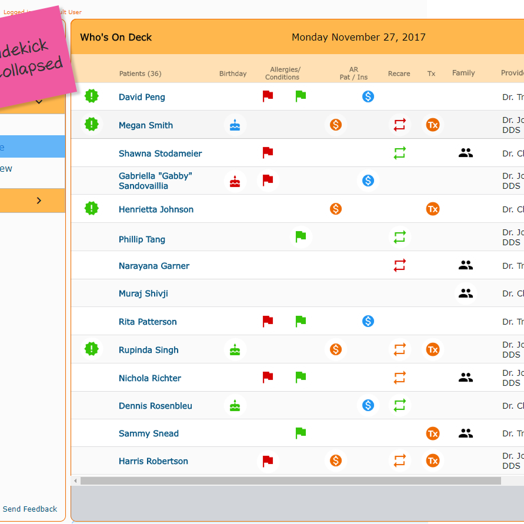
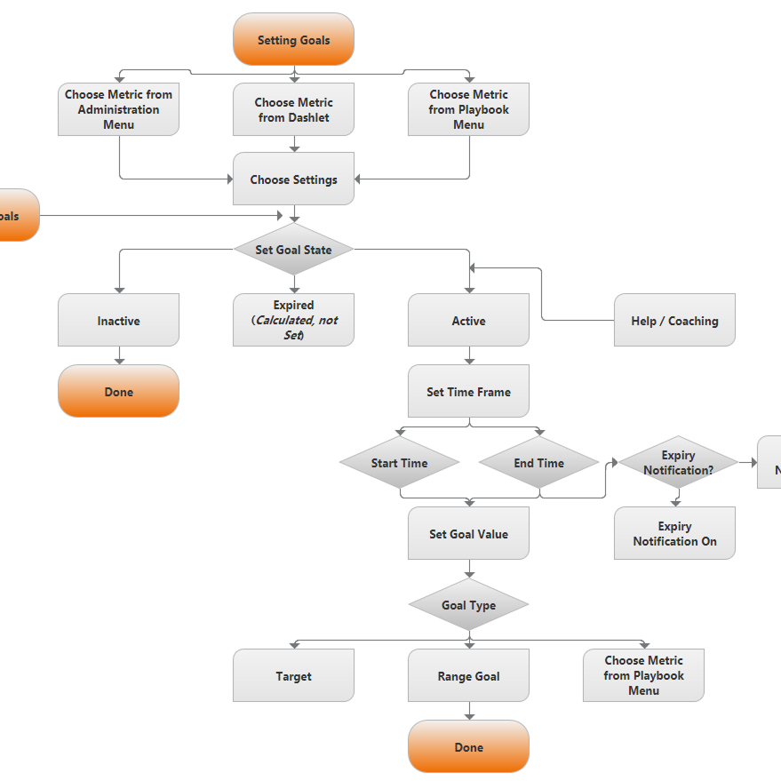
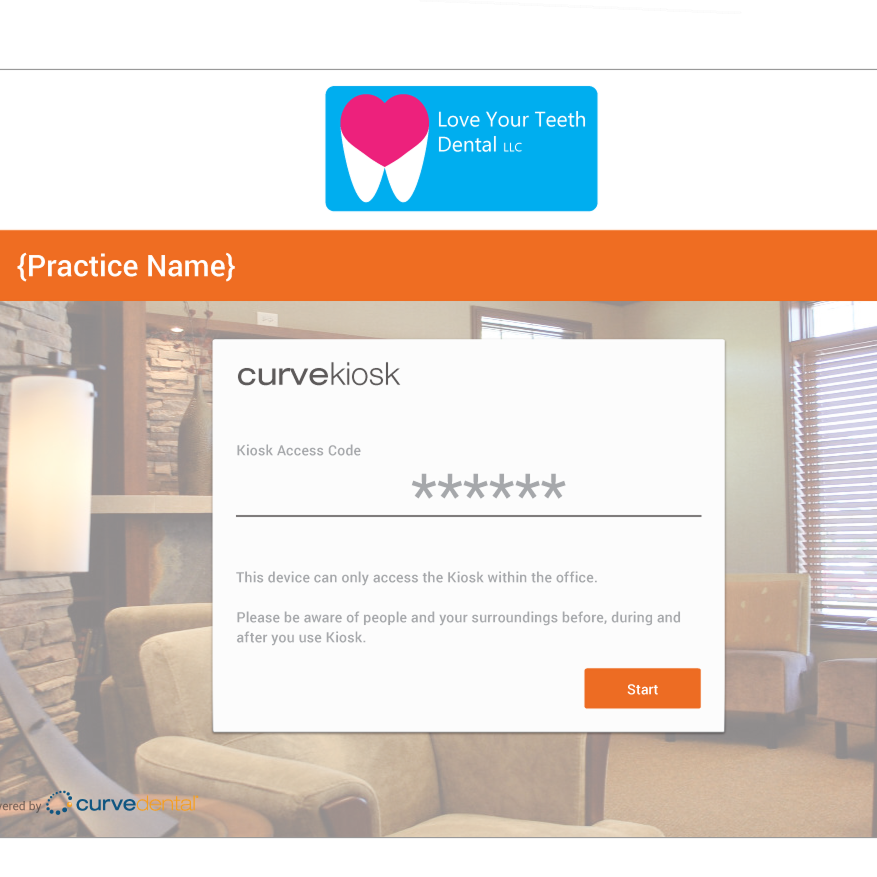
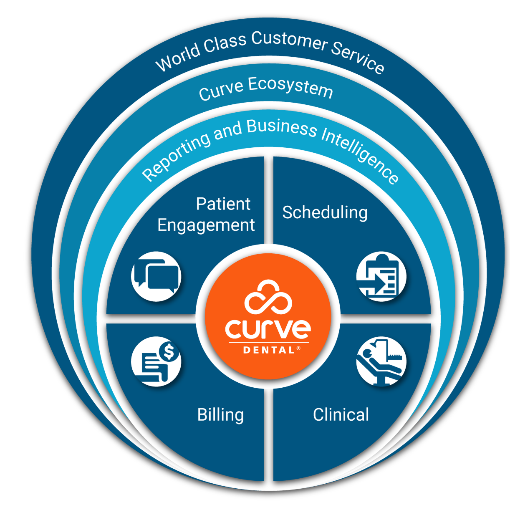
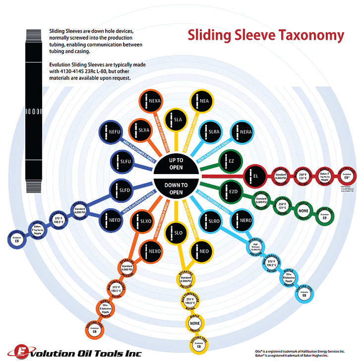
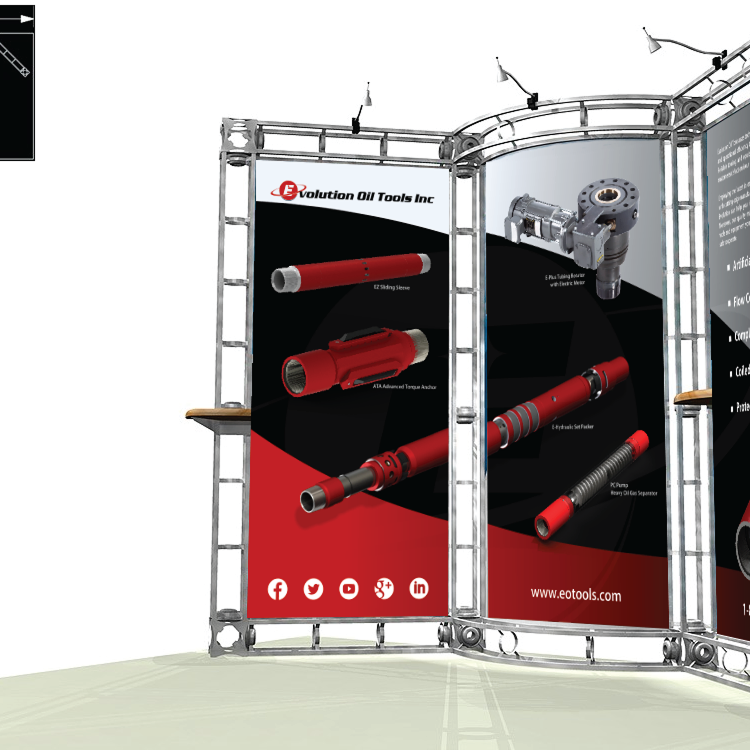
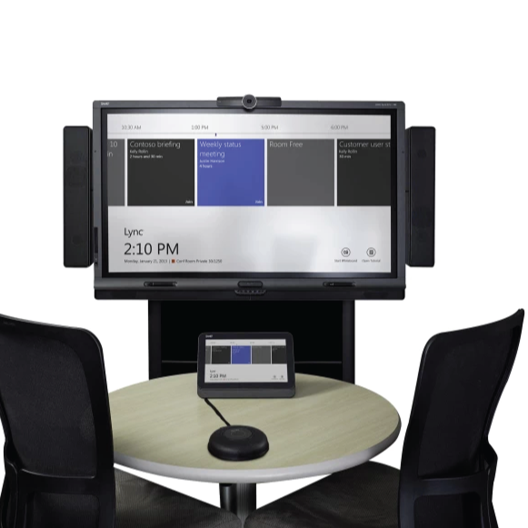
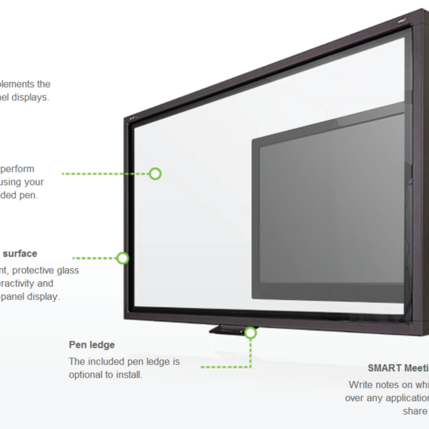
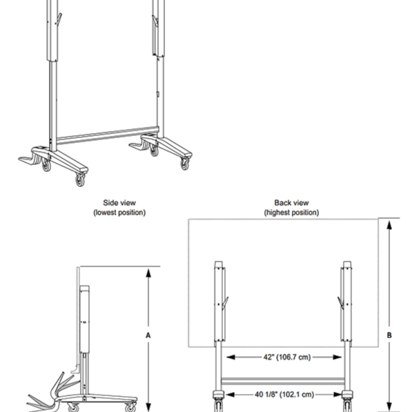
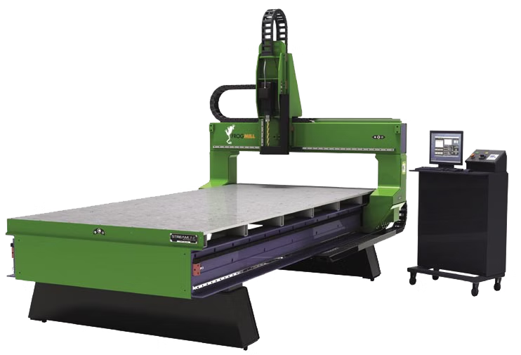

A wider view: UX, marketing and industrial design, from CAD to code.
This is a selection of user experience, marketing and industrial design work I've led over the course of my career — early evidence of the same instinct that now drives my product thinking: get close to the constraint, then design past it.
Interfaces built for real clinical and financial workflows
Statements
Radically upgraded both the back-end financial queries and the patient-facing deliverables behind Curve Dental's billing statements, delivering a substantially better experience for practices and patients alike.

Who's On Deck
A daily summary view of that day's patients — surfacing birthdays, patient and insurance accounts receivable, recare status, new patients, and whether other household members are also visiting — so dental offices can make the operational calls needed to run each day smoothly.

Goals in Business Intelligence Exploration
A design exploration into how goal-setting could be built directly into Curve Hero's business intelligence system, letting practices set and track targets rather than just review historical data.

Online Forms
Designed a template builder for cross-platform, responsive patient forms supporting multiple field types, along with a kiosk application for in-office use and an electronic signature feature. Feature page →

Making complex products explainable
Ecosystem Diagram
Designed the ecosystem diagram used across Curve Dental's prospect-facing presentations to explain how the product's pieces fit together.

Sliding Sleeve Infographic
Created an infographic for Evolution Oil Tools explaining the key features of the Sliding Sleeve family of products.

Trade Show Display
Designed the trade show display for Evolution Oil Tools.

Bridge Plug Animation
Produced an animation explaining how a WR bridge plug works.
Where the product instincts started
SMART Technologies Room System for Microsoft Lync
Led industrial design from concept through production.

Interactive Display Overlay
Responsible for overall industrial design, packaging, and user experience analysis on SMART Technologies' interactive display overlay.

Mobile Floor Stand
Led industrial design on a mobile floor stand that significantly reduced production cost while improving on the user experience of the previous model. Specifications →

FROGMill
Directly involved in the design of both the hardware and software of the FROGMill, which remains an industry-standard tool among sculptors, enlargement studios, tool makers, prototypers and mold-makers worldwide. Learn more →

More prior work
Why It's HereThe throughline to product
Long before I called myself a product manager, this is the work that built the instincts I use every day — translating a constraint, whether clinical, mechanical, or commercial, into something usable, and shipping it. It's a large part of why I can sit comfortably in a conversation about machining physics as easily as a roadmap review.
The throughline to product
Long before I called myself a product manager, this is the work that built the instincts I use every day — translating a constraint, whether clinical, mechanical, or commercial, into something usable, and shipping it. It's a large part of why I can sit comfortably in a conversation about machining physics as easily as a roadmap review.